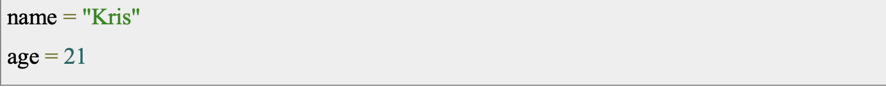
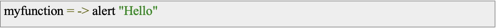
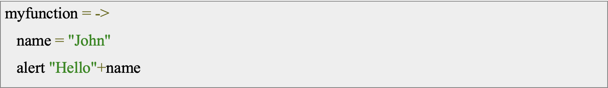
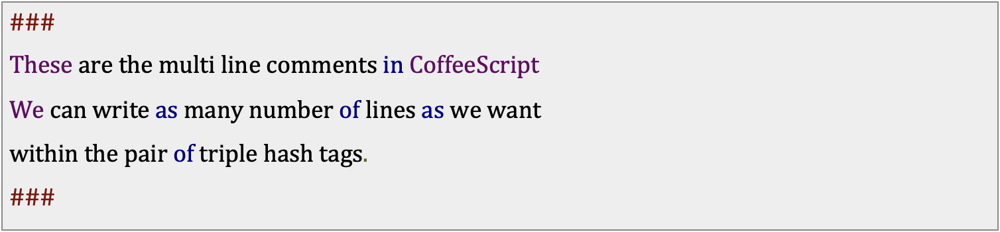
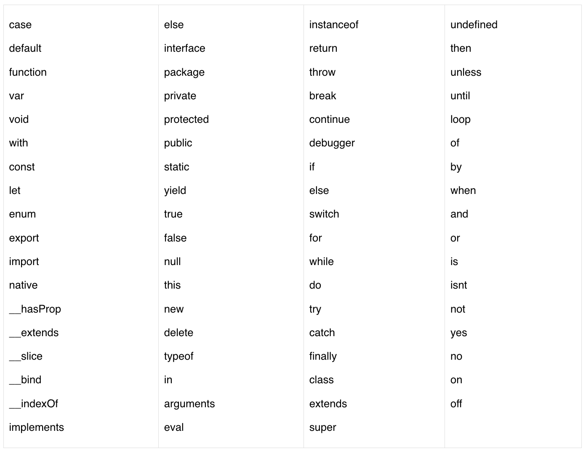

Какво е CoffeeScript?
CoffeeScript е малък език, който се компилира в JavaScript. Под тази неудобна патина в стил Java JavaScript винаги е имал прекрасно сърце. CoffeeScript е опит да се разкрият добрите части на JavaScript по лесен начин.
Златното правило на CoffeeScript е: „Това е просто JavaScript.“ Кодът се компилира едно към едно в еквивалентен JS и няма интерпретация по време на изпълнение. Можете да използвате всяка съществуваща JavaScript библиотека
безпроблемно от CoffeeScript (и обратно). Компилираният изход е четим, красиво отпечатан и има тенденция да работи толкова бързо или по-бързо от еквивалентния ръкописен JavaScript.
CoffeeScript има особен страничен ефект – помага на скептиците и невярващите да разберат по-добре колко добър може да бъде JavaScript и как работи на основно ниво, като в същото време ги учи да пишат по-оптимизиран код.
По принцип пишете целия си код на CoffeeScript, след което го пускате през компилатора, за да бъде изведен като JavaScript, който може да бъде хвърлен направо в браузъра – минус главоболието от писане на JavaScript.
CoffeeScript може да се използва навсякъде, където бихте използвали обикновен JavaScript, и също така може да използва всичките си библиотеки – помислете за интерактивни уебсайтове, разработка на игри и такива неща.
Защо CoffeeScript?
Kато за начало, той ви позволява да свършите работата със значително по-малко код – в края на краищата всички обичаме ефективността.
Той също така идва пълен с малки части, добавени например като интерполацията на низове на Ruby, разбирането на стиловия списък на Python и обвързващите променливи на Haskell. Именно тези добавки за качество на живот правят дори обичайните задачи значително по-поносими в CoffeeScript в сравнение с оригиналния JavaScript.
История
CoffeeScript е бил представен за първи път на 13 декември 2009 г., когато Джереми Ашкенас направил първоначалния комит на Git с коментара „първоначален комит на мистериозния език“. Компилаторът първоначално е бил написан на Ruby и на 24 декември 2009 г. Ашкенас направил първото маркирано и документирано издание, 0.1.0. До 21 февруари 2010 г. той бил ангажирал версия 0.5, която заменила компилатора на Ruby със самостоятелна хостваща версия в чист CoffeeScript. През това време проектът започва да привлича други участници в GitHub и уебсайтът получава над 300 посещения на страници на ден.
На 24 декември 2010 г. Ашкенас обявил пускането на stable 1.0.0 на Hacker News, сайтът, където първоначално е бил обявен проектът. Това бележи важен крайъгълен камък в развитието на CoffeeScript.
На 18 септември 2017 г. е била пусната версия 2.0.0 с цел да актуализира CoffeeScript с модерен JavaScript, като същевременно запазва характерния си изчистен синтаксис. Актуализацията има за цел да премахне пропуските в съвместимостта с JavaScript и да направи CoffeeScript по-жизнеспособен език за съвременното уеб развитие.
Синтаксис
Синтаксисът на CoffeeScript е по-изящен в сравнение със синтаксиса на JavaScript. Той избягва неприятните функции като фигурни скоби, точка и запетая и променливи забавяния.
• Изрази и променливи
За разлика от много други езици за програмиране като C, C++ и Java, изразите в CoffeeScript не завършват с точка и запетая (;). Вместо това, всеки нов ред се разглежда като отделен израз от компилатора на CoffeeScript. Създаването на променливи също не е типичното, защото няма нужда да ги декларирате с помощта на ключовата дума. Можем директно да създадем променлива, просто като ѝ присвоим стойност, както е показано по-долу.

По същия начин можем да напишем два израза в един ред, като ги разделим с точка и запетая, както е показано по-долу.
• Без скоби
По принцип използваме скоби, докато декларираме функцията, извикваме я, а също и за да разделяме кодовите блокове, за да избегнем двусмислие. В CoffeeScript няма нужда да използваме скоби и докато създаваме функции, използваме знак със стрелка (->) вместо скоби, както е показано по-долу.

Все пак трябва да използваме скоби в определени сценарии. Докато извикваме функции без параметри, ще използваме скоби. Например, ако имаме функция с име my_function в CoffeeScript, тогава трябва да я извикаме, както е показано по-долу.
По същия начин можем също да отделим двусмисления код с помощта на скоби. Ако наблюдавате следния пример, без скоби резултатът е 2233, а със скоби ще бъде 45.
• Без фигурни скоби
В JavaScript за блоковите кодове като функции, цикли и условни изрази използваме фигурни скоби. В CoffeeScript няма нужда да използваме фигурни скоби. Вместо това трябва да поддържаме правилни вдлъбнатини (бели пространства) в тялото. Това е функцията, която е вдъхновена от езика Python. Следва пример за функция в CoffeeScript. Тук можеме да забележиме, че вместо фигурни скоби сме използвали три празни интервала като отстъп, за да отделим тялото на функцията.
• Коментари
Във всеки език за програмиране ние използваме коментари, за да напишем описание на кода, който сме написали. Тези коментари не се считат за част от програмите. Коментарите в CoffeeScript са подобни на коментарите на езика Ruby. CoffeeScript предоставя два типа коментари, както следва
- Едноредови коментари
Всеки път, когато искаме да коментираме един ред в CoffeeScript, просто трябва да поставим хеш маркер преди него, както е показано по-долу. Всеки един ред, който следва хеш таг (#), се счита за коментар от компилатора на CoffeeScript и той компилира останалата част от кода в дадения файл с изключение на коментарите.
- Многоредови коментари
Всеки път, когато искаме да коментираме повече от един ред в CoffeeScript (няколко реда), можем да направим това, като обвием тези редове в чифт тройни хеш тагове, както е показано по-долу.
• Запазени ключови думи
Списък на всички запазени думи в CoffeeScript е даден в следващата таблица. Те не могат да се използват като CoffeeScript променливи, функции, методи, етикети на цикли или имена на обекти.
Предимства
• Разбира се, голямото предимство тук е синтактичната захар, добавена към CoffeeScript, за да улесни много по-лесното изразяването на вашето програмиране, като същевременно използваме значително по-малко код. Премахването на Ruby, Python и Haskell прави живота много по-лесен.
• Използването на CoffeeScript всъщност насърчава хората да използват добрите шаблони на JavaScript, които понякога могат да бъдат объркани чрез писане в оригиналния код. Способността на компилатора CoffeeScript да изпомпва прав JavaScript всъщност насърчава използването му.
• Обратно, тъй като CoffeeScript улеснява JavaScript за тези с малко опит в други езици за програмиране, той изкоренява анти-JavaScript настроенията, които изглежда стават все по-токсични всяка година.
• CoffeeScript е нещо, което прави дори добрия JavaScript код по-добър. Компилираният код на CoffeeScript може да прави всичко, което може и естествено написаният JavaScript код, само че кодът, произведен с помощта на CoffeeScript, е много по-кратък и много по-лесен за четене.
• Променливите в CoffeeScript са с автоматичен обхват, което означава, че не можеме да презапишеме глобалните стойности, като забравиме да въведете „var“, засенчваме променлива със същото име или имаме променливи, взаимодействащи в отделни файлове.
• Пропускането на думата функция и свързаните с нея къдрави скоби на Wurley, вместо обикновена стрелка „->“, прави обратните повиквания адски много по-лесни за извършване. Семантичният отстъп прави ясно кога са вложени обратните извиквания и по същия начин тази малка стрелка помага да се запази „това“, когато е подходящо да се направи това.
• Ако сте англоговорящ е много по-лесно да използвате „unless x“, вместо да се занимавате с тромавия синтаксис на „if (!x)“, както и „if x?“ е по-лесно за анализиране от „if (x = != null)“. Мозъчните клетки са ценни, така че разпределянето им за работа по логиката, вместо да разработват логиката на синтаксиса, изглежда като по-добро използване на вашите черепни ресурси.
Недостатъци
• Коефициентите са, че ако мразите Ruby, Python или Haskell – ще намразите и CoffeeScript. Програмистът като цяло ще бъде по-продуктивен на език, на който всъщност обича да програмира – което може да изглежда безсмислено, но това е нещо, което често се пренебрегва.
• Синтактичните грешки, които CoffeeScript може да изплюе, са меко казано неясни. Гледането на самия изход на JavaScript също не помага, тъй като грешката идва от самия входен код на CoffeeScript. Всъщност няма начин да съчетаете компилираните JavaScript редове код с оригиналния CoffeeScript.
• С всяка нова версия на CoffeeScript, която излиза, кодът също се променя леко. Това, което написахте преди 6 месеца, всъщност може сега да се компилира по различен начин в нова версия на CoffeeScript. Въпреки че това е същото в Ruby, Python и други езици за програмиране, обикновено с оригиналния JavaScript кодът работи добре в множество версии на множество браузъри, независимо от версиите.
• Мислете за JavaScript като английски, език, който е широко възприет в по-голямата част от земното кълбо или като роден език, или като често изучаван втори език. Въпреки че CoffeeScript стана доста популярен, той вероятно никога няма да има същата широко разпространена общност, която има JavaScript – правейки го нещо подобно на исландски, например.
Ако JavaScript ви причинява главоболия, но все още трябва да го използвате за вашата програмна роля, защо не опитате CoffeeScript? Тези с опит в други езици за програмиране са в определено предимство.
Като се има предвид това, CoffeeScript е много поляризиращ. Тези, които го обичат, наистина го обичат – докато тези, които го мразят, наистина, наистина го мразят. Това наистина се свежда до екипно решение в работната среда. Ако всички са на борда, производителността ще скочи до небето поради големия обем код, който няма да пишете, а също и колко чист ще бъде резултатният JavaScript.
Но какво да кажем за младшите програмисти, които едва разбират JavaScript, Ruby или Python като начало? Цикълът на отстраняване на грешки може да бъде малко кошмар дори за опитен ветеран и ще откриете, че потъвате адски много време в оправяне на работата на по-малко опитен член на екипа, вместо в собствената си – убивайки продуктивността.
Случаи на използване
• Front-end уеб разработка: CoffeeScript често се използва в front-end уеб разработка за създаване на динамични потребителски интерфейси и интерактивни уеб приложения. Неговият изчистен и кратък синтаксис може да улесни писането на сложен JavaScript код и да намали потенциала за грешки.
• Скриптове от страна на сървъра: CoffeeScript може да се използва и за скриптове от страна на сървъра, позволявайки на разработчиците да пишат код от страна на сървъра на език, който е по-четлив и по-малко многословен от традиционните скриптови езици като Perl или Ruby.
• Приложения за настолни компютри между платформи: CoffeeScript може да се използва за разработване на приложения за десктоп между платформи, като се използват рамки като Electron. Това позволява на разработчиците да създават собствени настолни приложения, които могат да се изпълняват на множество операционни системи, без да се налага да учат различни езици за програмиране за всяка платформа.
• Разработка на игри: CoffeeScript може да се използва и за разработка на игри, позволявайки на разработчиците да създават 2D и 3D игри, използвайки библиотеки като Phaser или Three.js. Неговият кратък синтаксис и обектно-ориентираното програмиране го правят много подходящ за създаване на сложна механика на играта.
Популярни проекти

• Atom: Atom е популярен текстов редактор, разработен от GitHub. Той е изграден върху Electron и използва CoffeeScript за основната си функционалност. Използването на CoffeeScript позволява на Atom да осигури по-удобно изживяване чрез опростяване на сложния JavaScript код.
• Meteor: Meteor е платформа с отворен код за създаване на уеб и мобилни приложения. Той използва CoffeeScript за основната си функционалност, включително изграждане и опаковане на приложения, и позволява на разработчиците да пишат сървърен код в CoffeeScript.
• Babel: Babel е JavaScript компилатор, който позволява на разработчиците да пишат модерен JavaScript код и да го компилират в по-стари версии на JavaScript, които се поддържат по-широко от уеб браузърите. Той използва CoffeeScript за своите скриптове за изграждане и конфигуриране.
• DocPad: DocPad е статичен генератор на сайтове, който позволява на разработчиците да генерират HTML уебсайтове, използвайки различни езици за програмиране. Той използва CoffeeScript за основната си функционалност, включително изграждане и обработка на файлове на уебсайтове.
Заключение
В заключение, CoffeeScript е многофункционален и мощен език за програмиране, който спечели значителни последователи в общността за уеб разработка. Той предлага чист и кратък синтаксис, който опростява процеса на писане на сложен JavaScript код, като същевременно предоставя много разширени функции като обектно-ориентирано програмиране, разбиране на масиви и генератори.
В това есе изследвахме историята и еволюцията на CoffeeScript, както и някои от най-честите случаи на употреба и популярни проекти, които го използват. Видяхме как CoffeeScript е възприет както от компании, така и от разработчици заради неговата лесна употреба, гъвкавост и способност за опростяване на сложни задачи за кодиране.
Въпреки появата на по-нови езици за програмиране, CoffeeScript продължава да бъде популярен избор за уеб разработчиците, благодарение на многобройните си предимства. Независимо дали създавате предни уеб приложения, скриптове от страна на сървъра или междуплатформени настолни приложения, CoffeeScript е мощен инструмент, който може да ви помогне да постигнете целите си за програмиране.
Източници
https://www.tutorialspoint.com/coffeescript/coffeescript_syntax
https://en.wikipedia.org/wiki/CoffeeScript
https://www.kofi-group.com/coffeescript-and-5-things-you-need-to-know-about-it-in-2021
https://coffeescript.org
https://github.com/jashkenas/coffeescript